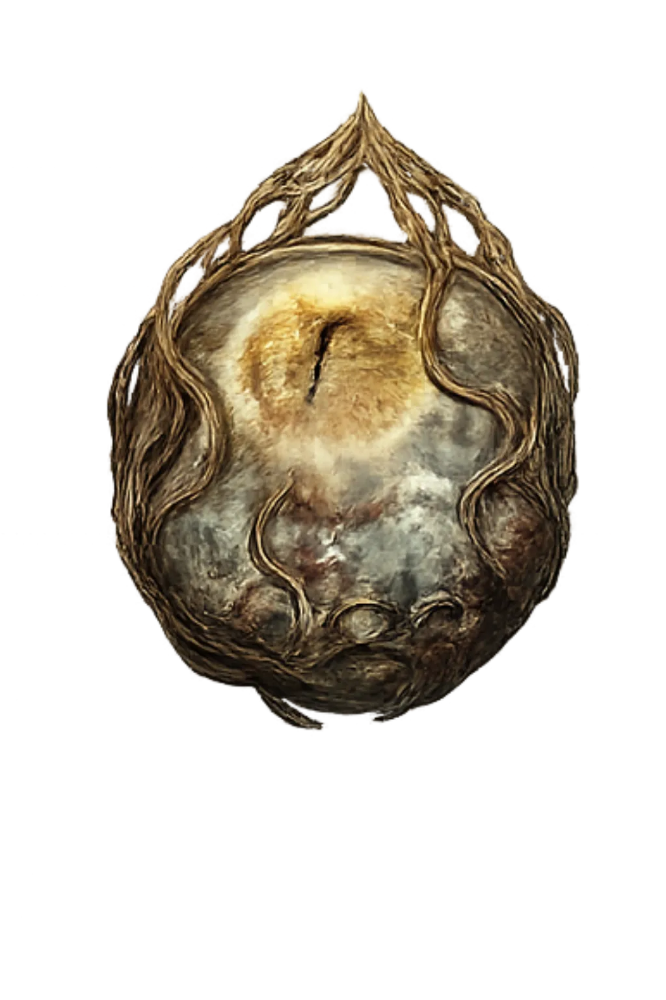
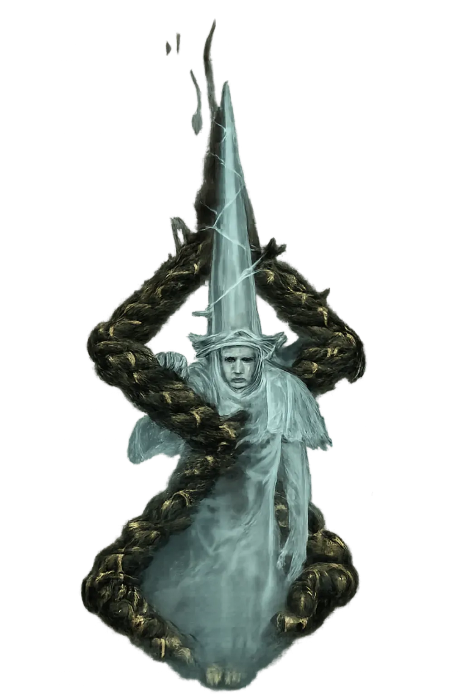
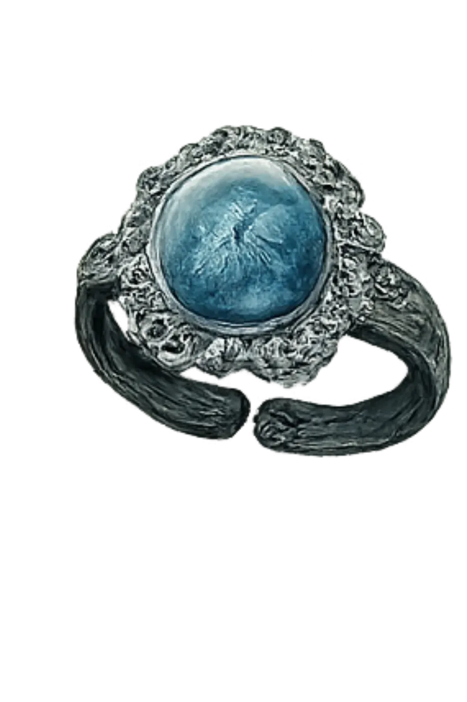
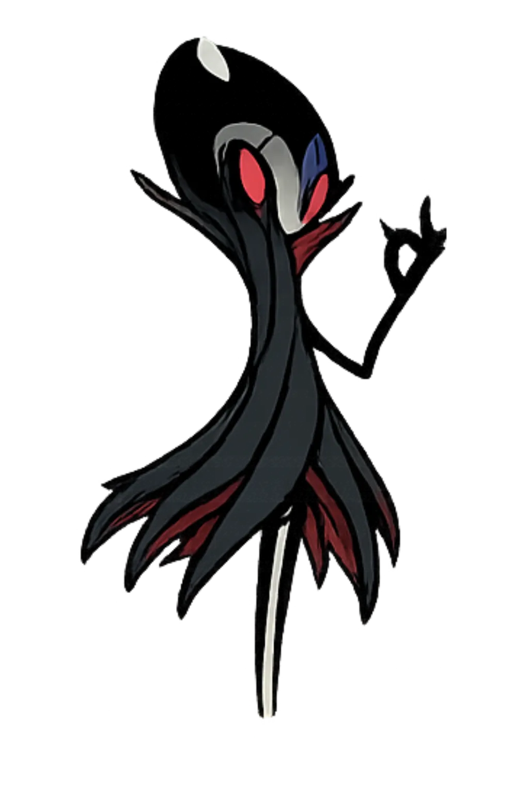
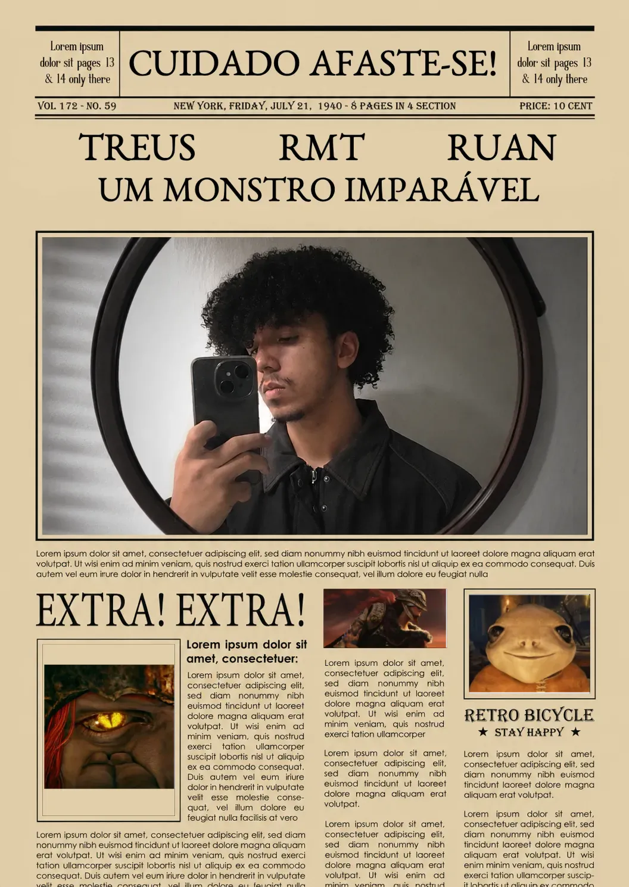

"Sei lá, eu jogo jogos difíceis, e de vez em quando posto isso nas redes sociais, faço desafios de não tomar dano e gasto muitas horas e paciência pra derrotar chefes -_-"
[TEXTO PENDENTE — Elden Ring 1]
[TEXTO PENDENTE — Elden Ring 2]
[TEXTO PENDENTE — Elden Ring 3]
[TEXTO PENDENTE — Elden Ring 4]
[TEXTO PENDENTE — introdução sobre God of War]
[TEXTO PENDENTE — Hollow Knight Panteão]
[TEXTO PENDENTE — Hollow Knight Radiance]
[TEXTO PENDENTE — The Last of Us 2, 1]
[TEXTO PENDENTE — The Last of Us 2, 2]